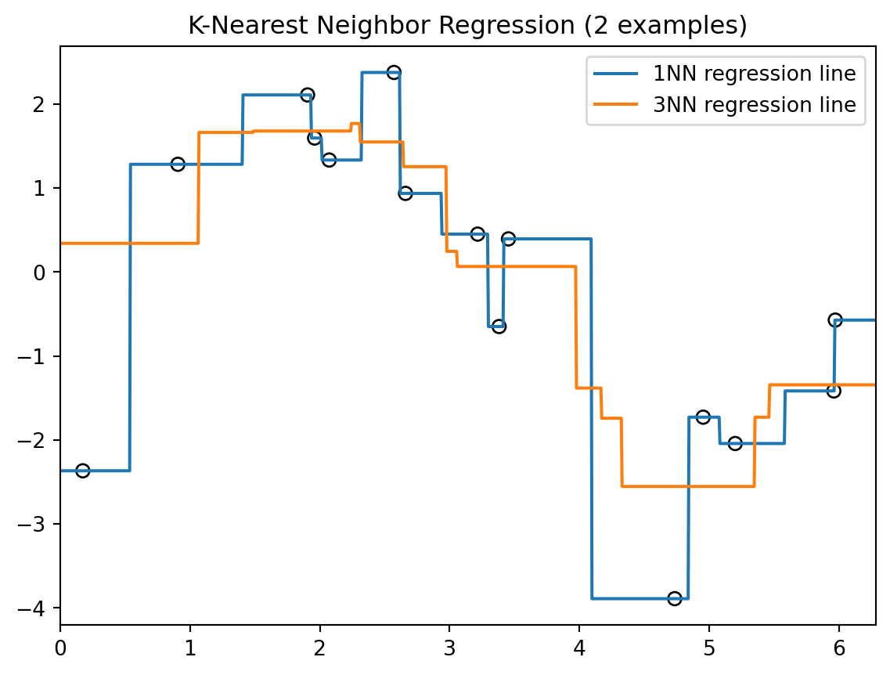
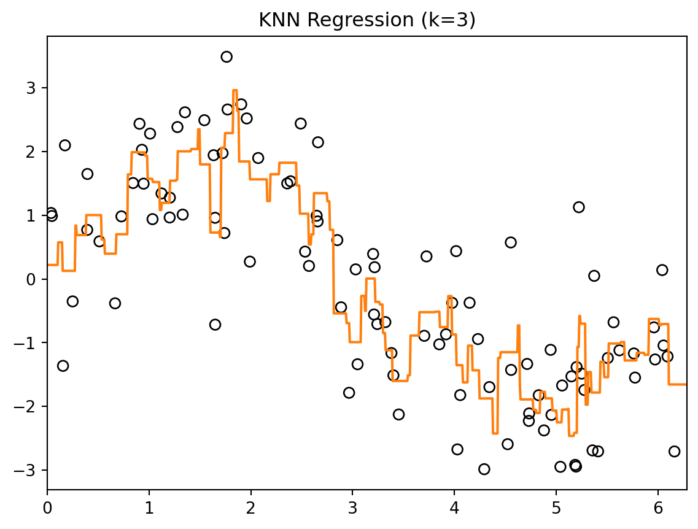
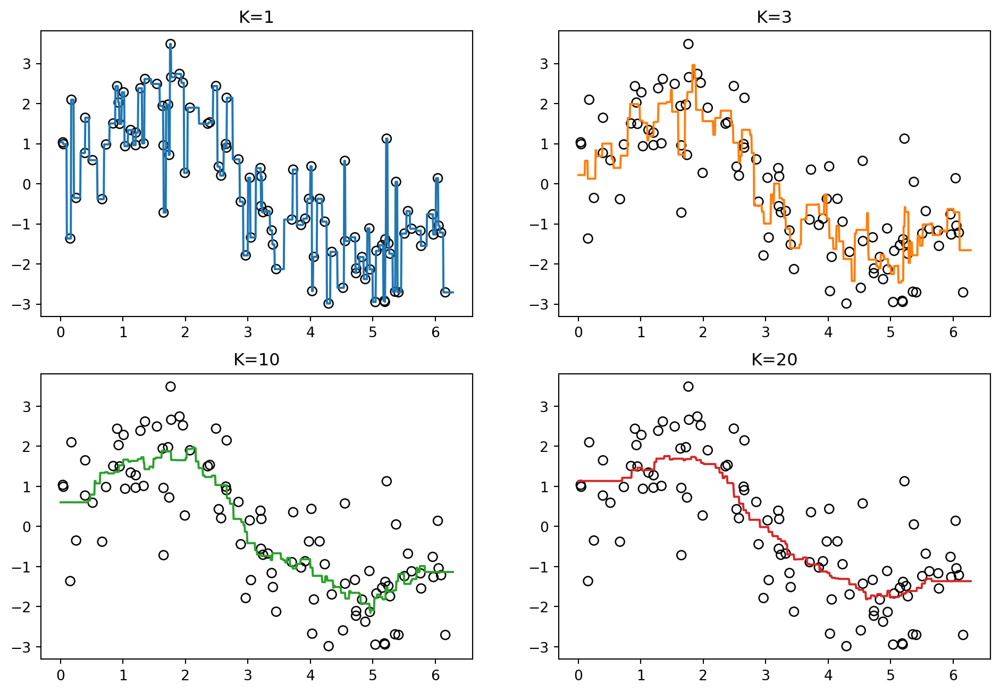
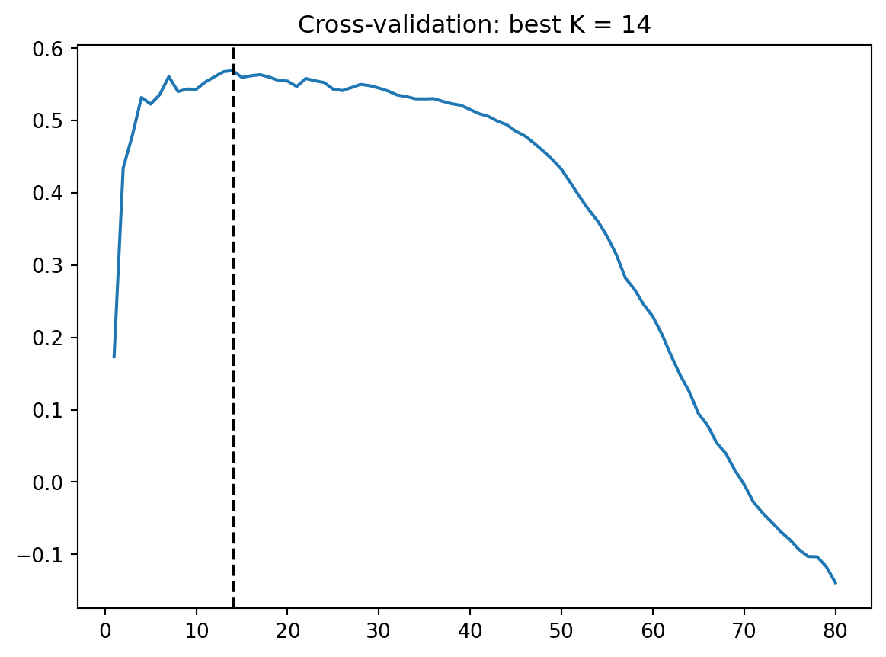
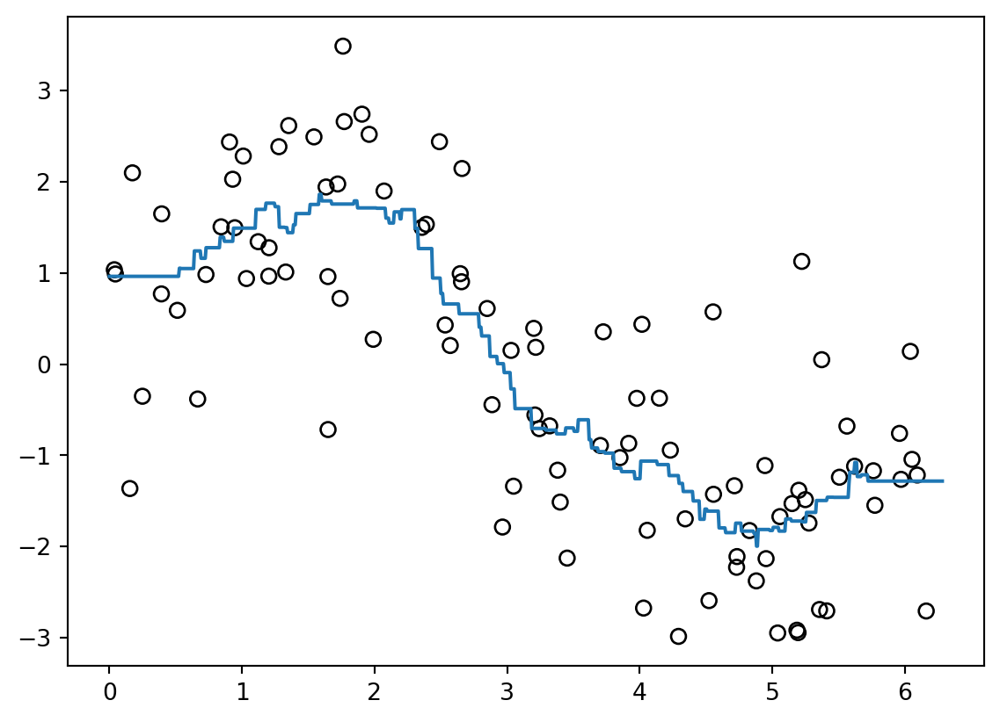

8 KNN Regression
\[ \require{physics} \require{braket} \]
\[ \newcommand{\dl}[1]{{\hspace{#1mu}\mathrm d}} \newcommand{\me}{{\mathrm e}} % \newcommand{\argmin}{\operatorname{argmin}} \newcommand{\rss}{\mathrm{RSS}} \newcommand{\ols}{\mathrm{OLS}} \newcommand{\ridge}{\mathrm{ridge}} \newcommand{\lasso}{\mathrm{lasso}} \newcommand{\mle}{\mathrm{MLE}} \newcommand{\constant}{\mathrm{constant}} \newcommand{\resid}{\mathrm{residual}} \newcommand{\span}{\mathrm{span}} \]
$$
$$
\[ \newcommand{\pdfbinom}{{\tt binom}} \newcommand{\pdfbeta}{{\tt beta}} \newcommand{\pdfpois}{{\tt poisson}} \newcommand{\pdfgamma}{{\tt gamma}} \newcommand{\pdfnormal}{{\tt norm}} \newcommand{\pdfexp}{{\tt expon}} \]
\[ \newcommand{\distbinom}{\operatorname{B}} \newcommand{\distbeta}{\operatorname{Beta}} \newcommand{\distgamma}{\operatorname{Gamma}} \newcommand{\distexp}{\operatorname{Exp}} \newcommand{\distpois}{\operatorname{Poisson}} \newcommand{\distnormal}{\operatorname{\mathcal N}} \]
K-nearest neighbors (KNN) regression is one of the simplest nonparametric regression methods. It is called nonparametric because it does not assume a fixed formula for the regression function. Instead, it estimates the response at a new point by using the responses of nearby training points.
8.1 KNN regression model
Given training data
\[ \{(x_i,y_i)\}_{i=1}^n,\quad x_i\in\mathbb R^p,\; y_i\in\mathbb R, \]
we want to estimate the regression function
\[ f(x)=\operatorname{E}[Y\mid X=x]. \]
Definition 8.1 (KNN regressor) For a new point \(x_0\), let \(N_K(x_0)\) be the set of indices corresponding to the \(K\) training points closest to \(x_0\). The KNN regression estimate is
\[ \hat f(x_0) = \frac{1}{K}\sum_{i\in N_K(x_0)} y_i. \]
That is, the predicted value is the average response among the \(K\) nearest neighbors of \(x_0\).
Sometimes, different neighbors are given different weights. In that case, the weighted KNN regressor has the form
\[ \hat f(x_0) = \sum_{i=1}^n w_i(x_0)y_i, \]
where \(w_i(x_0)\ge 0\) and
\[ \sum_{i=1}^n w_i(x_0)=1. \]
In ordinary KNN regression,
\[ w_i(x_0) = \begin{cases} 1/K, & i\in N_K(x_0),\\ 0, & i\notin N_K(x_0). \end{cases} \]
Example 8.1 Here are two examples of KNN regression on a one-dimensional dataset. We show the 1-nearest neighbor (1NN) and 3-nearest neighbor (3NN) regression lines.
You can see that the 3NN regression line is smoother than the 1NN regression line, since it averages over more nearby points.
NoteTuning \(K\)
The tuning parameter \(K\) is the most important hyperparameter in KNN.
- small \(K\): uses very local information, therefore it is more sensitive to noise
- large \(K\): averages over more points, therefore it is more stable but more biased
This reflects the bias–variance tradeoff: smaller \(K\) leads to a more flexible (wiggly) fit, while larger \(K\) produces a smoother estimate.
In practice, \(K\) is typically chosen using cross-validation.
8.1.1 Distance
\[ d(x,x')=\sqrt{\sum_{j=1}^p (x_j-x'_j)^2} \]
8.1.2 Curse of dimensionality
- high \(p\) → sparse neighbors
- performance degrades
8.1.3 Comparison
- linear model: global
- KNN: local
8.2 KNN in Python
We may use KNeighborsRegressor from sklearn.neighbors to implement KNN. The API is almost the same as in linear models. So we can set up the same cross-validation, pipeline, etc.. Here is a simple example.
First we simulate a dataset based on \(\sin(x)\).
import numpy as np
rng = np.random.default_rng(1)
N = 100
X = rng.uniform(0, 2 * np.pi, size=N).reshape(-1, 1)
y = (2 * np.sin(X.reshape(-1)) + rng.normal(size=N)).reshape(-1)- 1
-
The purpose of these reshape is that
Xis requrired to be of 2D array, andyis required to be 1D arrary.
We generate test points on a fine grid (with 1001 points) for visualization.
X_test = np.linspace(0, 2 * np.pi, 1001).reshape(-1, 1)Then we initialize a KNN model with \(K=3\), fit the model and make prediction.
from sklearn.neighbors import KNeighborsRegressor
knn = KNeighborsRegressor(n_neighbors=3)
knn.fit(X, y)
y_pred = knn.predict(X_test)Finally we could plot the result using matplotlib.pyplot.
import matplotlib.pyplot as plt
plt.scatter(X.reshape(-1), y, s=40, facecolors="none", edgecolors="black")
plt.plot(X_test, y_pred, color="C1")
plt.title("KNN Regression (k=3)")
plt.xlim(0, 2 * np.pi)
8.2.1 Tuning \(K\)
Before applying cross-validation, we first visualize how different values of \(K\) affect the fit.
Code
knn1 = KNeighborsRegressor(n_neighbors=1)
knn1.fit(X, y)
y_pred1 = knn1.predict(X_test)
knn3 = KNeighborsRegressor(n_neighbors=3)
knn3.fit(X, y)
y_pred3 = knn3.predict(X_test)
knn10 = KNeighborsRegressor(n_neighbors=10)
knn10.fit(X, y)
y_pred10 = knn10.predict(X_test)
knn20 = KNeighborsRegressor(n_neighbors=20)
knn20.fit(X, y)
y_pred20 = knn20.predict(X_test)
fig, axs = plt.subplots(2, 2, figsize=(12, 8))
axs[0, 0].scatter(X.reshape(-1), y, s=40, facecolors="none", edgecolors="black")
axs[0, 0].plot(X_test, y_pred1, color="C0")
axs[0, 0].set_title(f"K=1")
axs[0, 1].scatter(X.reshape(-1), y, s=40, facecolors="none", edgecolors="black")
axs[0, 1].plot(X_test, y_pred3, color="C1")
axs[0, 1].set_title(f"K=3")
axs[1, 0].scatter(X.reshape(-1), y, s=40, facecolors="none", edgecolors="black")
axs[1, 0].plot(X_test, y_pred10, color="C2")
axs[1, 0].set_title(f"K=10")
axs[1, 1].scatter(X.reshape(-1), y, s=40, facecolors="none", edgecolors="black")
axs[1, 1].plot(X_test, y_pred20, color="C3")
axs[1, 1].set_title(f"K=20")Text(0.5, 1.0, 'K=20')
The fitted curve becomes smoother but more biased as \(K\) increases.
We now select \(K\) using cross-validation. In this example we search up to \(K=80\) because in 5-fold CV, each training split contains about 80 observations. Using very large \(K\) (close to the training size) effectively averages over nearly all points, which usually leads to poor models. Therefore in general we can choose a smaller range.
from sklearn.model_selection import GridSearchCV
klist = list(range(1, 81))
params = {"n_neighbors": klist}
gs = GridSearchCV(
KNeighborsRegressor(),
param_grid=params,
cv=5
)
gs.fit(X, y)GridSearchCV(cv=5, estimator=KNeighborsRegressor(),
param_grid={'n_neighbors': [1, 2, 3, 4, 5, 6, 7, 8, 9, 10, 11, 12,
13, 14, 15, 16, 17, 18, 19, 20, 21, 22,
23, 24, 25, 26, 27, 28, 29, 30, ...]})In a Jupyter environment, please rerun this cell to show the HTML representation or trust the notebook. On GitHub, the HTML representation is unable to render, please try loading this page with nbviewer.org.
Parameters
KNeighborsRegressor(n_neighbors=14)
Parameters
plt.plot(klist, gs.cv_results_["mean_test_score"])
plt.axvline(x=gs.best_params_["n_neighbors"], color="black", linestyle="--")
plt.title(f"Cross-validation: best K = {gs.best_params_['n_neighbors']}")Text(0.5, 1.0, 'Cross-validation: best K = 14')
With this best \(K\), the fitted curve is
y_pred = gs.predict(X_test)
plt.scatter(X.reshape(-1), y, s=40, facecolors="none", edgecolors="black")
plt.plot(X_test, y_pred, color="C0")